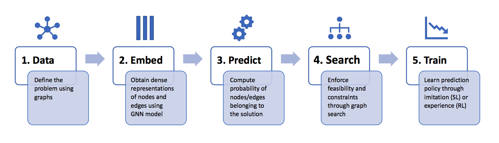

Combinatorial Optimization

Operations Research and Combinatorial Problems
Operations Research (OR) started in the first world war as an initiative to use mathematics and computer science to assist military planners in their decisions. Nowadays it is widely used in the industry, including but not limited to transportation, supply chain, energy, finance, and scheduling.
OR Problems are formulated as integer constrained optimization, i.e., with integral or binary variables (called decision variables). While not all such problems are hard to solve (e.g., finding the shortest path between two locations), we concentrate on Combinatorial (NP-Hard) problems. NP-Hard problems are impossible to solve optimally at large scales as exhaustively searching for their solutions is beyond the limits of modern computers. The Travelling Salesman Problem (TSP) and the Minimum Spanning Tree Problem (MST) are two of the most popular examples for such problems defined using graphs.
 TSP asks the following question: Given a list of cities and the distances between each pair of cities, what is the shortest possible route that visits each city and returns to the origin city? Formally, given a graph, one needs to search the space of permutations to find an optimal sequence of nodes, called a tour, with minimal total edge weights (tour length).
TSP asks the following question: Given a list of cities and the distances between each pair of cities, what is the shortest possible route that visits each city and returns to the origin city? Formally, given a graph, one needs to search the space of permutations to find an optimal sequence of nodes, called a tour, with minimal total edge weights (tour length).
Neural Combinatorial Optimization
Although handcrafted heuristic algorithms are able to solve problems such as TSP with up to a million variables, designing good heuristics often requires significant specialized knowledge and years of trial-and-error. The state-of-the-art TSP solver, Concorde, leverages over 50 years of research on linear programming, cutting plane algorithms and branch-and-bound. At our lab, we're working on automating and augmenting such expert intuition through Machine Learning [Bengio et al., 2018].
Since most problems are highly structured, heuristics take the form of rules or policies to make sequential decisions, e.g., determine the TSP tour one city at a time. Our research uses deep neural networks to parameterize these policies and train them directly from problem instances. In particular, Graph Neural Networks are the perfect fit for the task because they naturally operate on the graph structure of these problems.

Chaitanya Joshi
Research Assistant
Chaitanya Joshi is a Research Assistant under Dr. Xavier Bresson at NTU, Singapore, applying Graph Neural Networks to Operations Research and Combinatorial Optimization.
Publications
On Learning Paradigms for the Travelling Salesman Problem

An Efficient Graph Convolutional Network Technique for the Travelling Salesman Problem

Talks
Graph Neural Networks for the Travelling Salesman Problem

Graph Convolutional Neural Networks for Molecule Generation and Travelling Salesman Problem